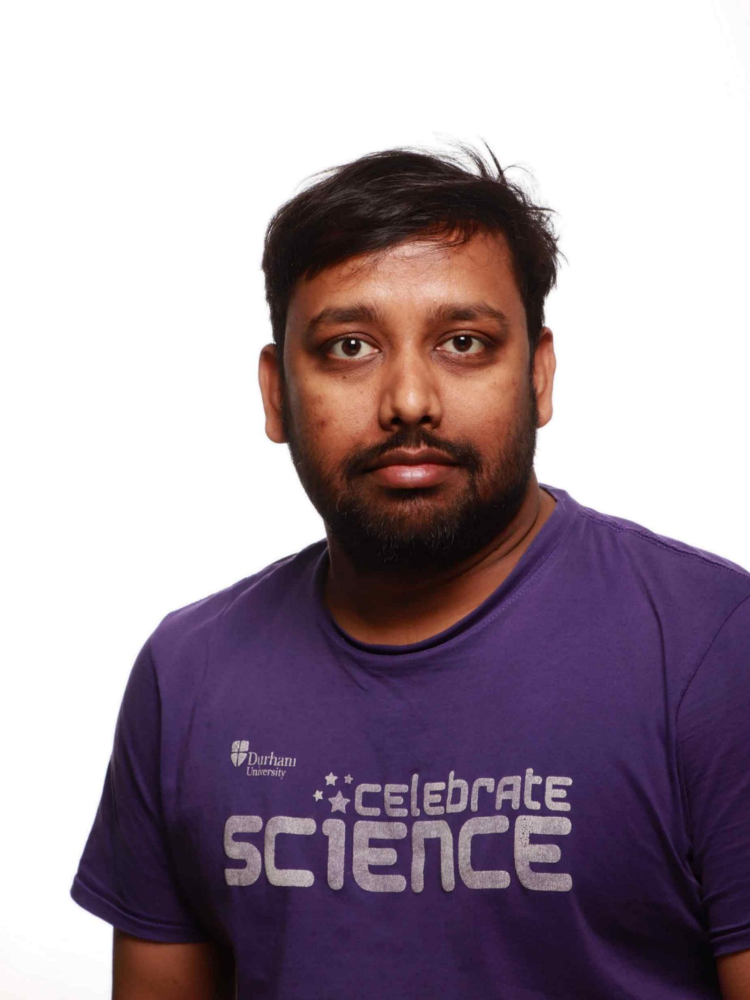

CNRS Postdoctoral Researcher
I am a CNRS Postdoctoral Researcher at the FEMTO-ST Institute, Besançon, France, working in the Time & Frequency Department.
My research focuses on structured matter waves, twisted electron and ion beams, quantum optics, optical atomic clocks, precision spectroscopy, optical metrology, and laser stabilization.
Previously, I worked at Tampere University (Finland), Durham University (United Kingdom), IIT Delhi (India), and LENS Florence (Italy).
My work combines atomic, molecular and optical physics, precision measurements, and quantum technologies with a particular interest in orbital angular momentum of matter waves.
FEMTO-ST Institute, France
2025 – Present
Tampere University, Finland
2023 – 2025
Indian Institute of Technology Delhi, India
2021 – 2022
LENS Florence, Italy
2020 – 2021
Durham University, United Kingdom
2015 – 2021
Generation and characterization of twisted electron and ion beams carrying orbital angular momentum.
Development of structured matter-wave techniques for microscopy, metrology and quantum technologies.
Optical atomic clocks, micro-vapor cells, modulation transfer spectroscopy, frequency references, and laser stabilization.